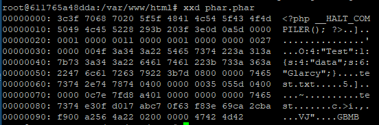
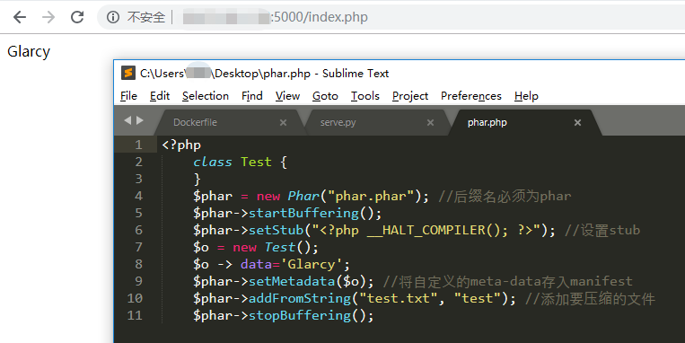
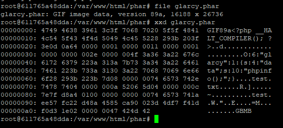
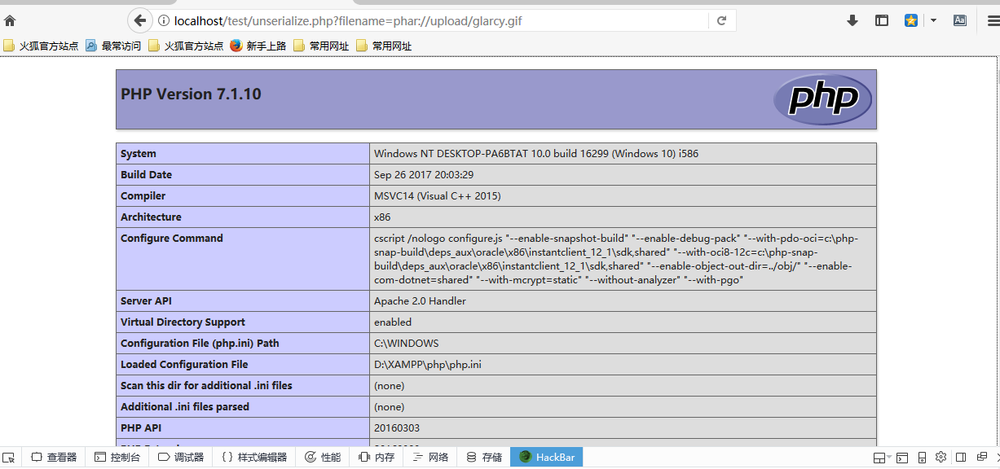

记录一下phar的反序列化
phar简介
phar (PHP Archive) 是PHP里类似于Java中jar的一种打包文件
phar文件结构
（1）stub
一个供phar扩展用于识别的标志，格式为xxx，前面内容不限，但必须以__HALT_COMPILER();?>来结尾，否则phar扩展将无法识别这个文件为phar文件。
（2）manifest
phar文件本质上是一种压缩文件，其中每个被压缩文件的权限、属性等信息都放在这部分。这部分还会以序列化的形式存储用户自定义的meta-data，这里即为反序列化漏洞点。
（3）contents
被压缩文件的内容。
（4）signature
签名，放在文件末尾。
使用phar的前提
因为我们现在需要创建Phar文件，所以需要允许写入Phar文件，这需要修改一下apache2和cli下的php.ini，将php.ini中的phar.readonly选项设置为Off，否则无法生成phar文件。
简单的demo
phar.php
1 |
|
执行phar.php会生成一个phar文件，查看phar文件，可以明显的看到meta-data是以序列化的形式存储的

有序列化数据必然会有反序列化操作，php一大部分的文件系统函数在通过phar://伪协议解析phar文件时，都会将meta-data进行反序列化
index.php
1 |
|
访问index.php就能看到输出效果，验证了使用phar://伪协议解析phar文件时确实进行了反序列化操作

漏洞点
phar反序列化漏洞的漏洞点在于使用phar://协议读取文件的时候，文件内容会被解析成phar对象，然后phar对象内的Metadata信息会被反序列化；当Metadata内容可由用户控制，则会存在反序列化漏洞风险。
利用条件
- phar文件要能够上传到服务器端。
- 要有可用的魔术方法作为“跳板”。
- 文件操作函数的参数可控，且
:、/、phar等特殊字符没有被过滤。
绕过文件检测
环境搭建
upload.html
1 |
|
upload.php
1 |
|
unserialize.php
1 |
|
首先根据unserialize.php创建一个phar文件，由于只允许上传gif文件，因此我们需要在setStub()函数前面添加伪造其他格式文件的标志性内容
glarcy.php
1 |
|
运行glarcy.php会生成一个glarcy.phar，查看此文件类型，可以看到确实变成了gif

修改phar后缀为gif，将此文件上传，成功上传
在unserialize.php中利用，发现运行成功

参考链接：